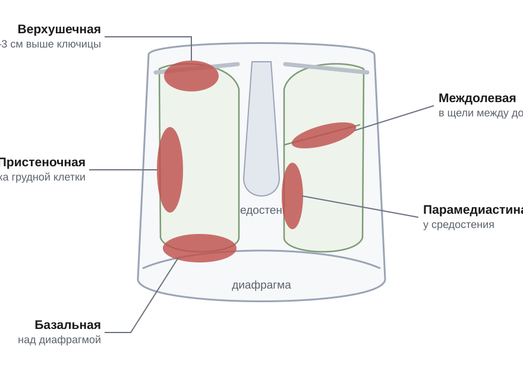
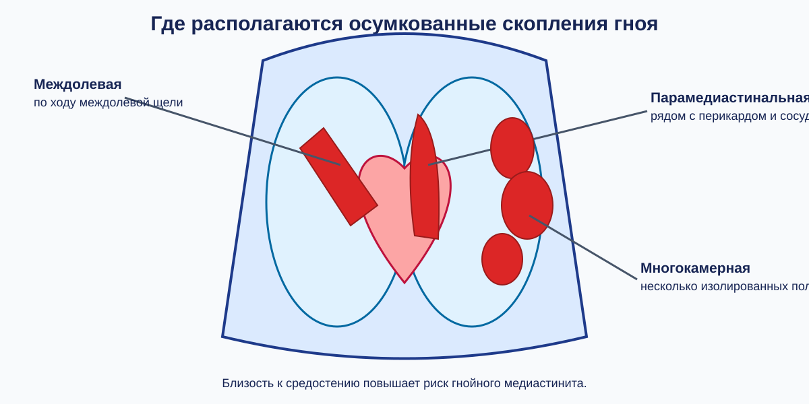
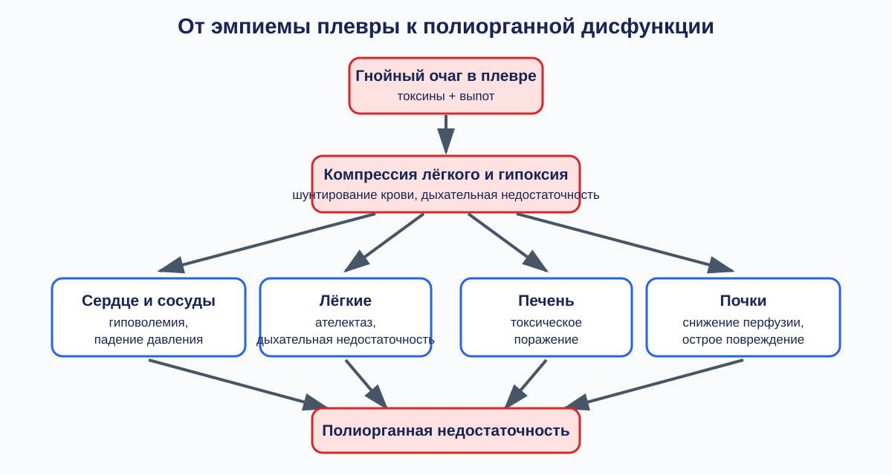
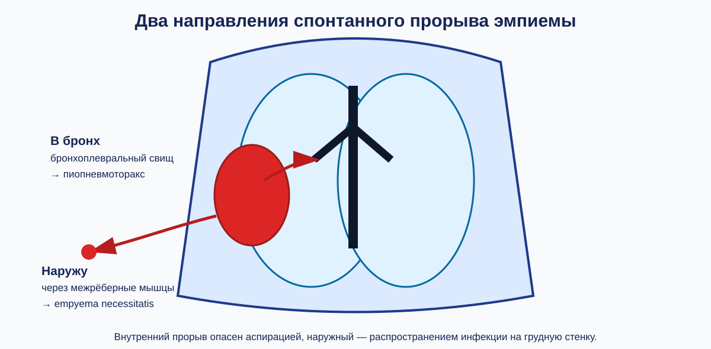
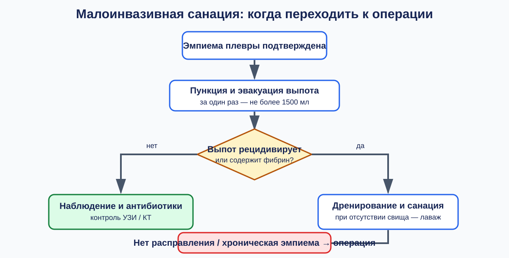
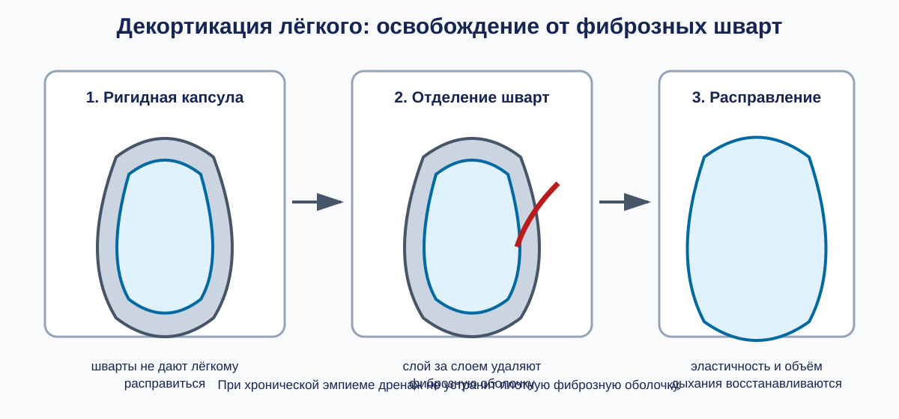

Гнойный плеврит
Этиология и патогенез эмпиемы плевры
Эмпиема плевры — скопление гнойного экссудата в естественной плевральной полости между висцеральным и париетальным листками, чем отличается от абсцесса, формирующего собственную полость. Возбудители: золотистый стафилококк, грамотрицательные бактерии (кишечная или синегнойная палочка, клебсиелла) и неспорообразующие анаэробы. Их микробные ассоциации вызывают тяжелое воспаление с ихорозным распадом.
Инфекция чаще попадает из легкого: при стафилококковой деструкции (с разрушением субплевральных абсцессов) или перфорации каверны при туберкулезе (специфическая эмпиема).
Острая гиперемия и возрастание проницаемости капилляров приводят к выпадению фибрина, который закупоривает лимфатические щели париетальной плевры. Из-за блокады лимфатических путей резорбция прекращается, а экссудат накапливается и замещается гноем.
Нарастающий гной вызывает компрессионный коллапс лёгкого с острой дыхательной недостаточностью. Превышение внутриплеврального давления приводит к дислокации средостения, деформации полых вен и снижению венозного возврата к сердцу.
Классификация эмпиемы плевры по течению и генезу
Острая эмпиема плевры длится до 8 недель. Хроническая эмпиема персистирует свыше 8 недель, когда формируются плотные фибринозные наложения и шварты, мешающие расправлению легкого.
| Классификационный критерий | Клиническая форма | Особенности патогенеза |
|---|---|---|
| Длительность процесса (временной критерий) | Острая эмпиема плевры | Длительность нагноения составляет до 8 недель от начала заболевания |
| Хроническая эмпиема плевры | Персистенция гнойного очага свыше 8 недель с формированием плотных сращений | |
| Связь с патологией лёгких (генез) | Парапневмонический плеврит | Развивается на фоне пневмонии без деструкции легочной ткани |
| Метапневмоническая эмпиема | Сочетается с деструкцией лёгкого при прорыве внутрилегочных гнойников | |
| Специфическая эмпиема | Возникает при туберкулёзе вследствие перфорации каверны в плевральную полость |
Парапневмонический плеврит протекает без деструкции паренхимы (микробы проникают контактно или по лимфатическим путям). Метапневмоническая эмпиема возникает при прорыве абсцесса легкого и сопровождается свищом. Специфическая эмпиема туберкулёзной этиологии развивается при перфорации каверны и требует туберкулостатиков.
Топографические формы: верхушечная, базальная и пристеночная эмпиема
Фибринозные спайки склеивают листки плевры, изолируя гной в замкнутых карманах.

Верхушечная (апикальная) эмпиема локализуется над верхушкой легкого (купол плевры поднимается на 2–3 см выше ключицы и сзади достигает уровня остистого отростка VII шейного позвонка). Рентгенологически проявляется однородным затемнением с выгнутой книзу дугообразной границей; УЗИ проводится через надключичную ямку.
Пристеночная (паракостальная) эмпиема фиксируется к реберной плевре, оттесняя легкое медиально. На рентгенограмме дает полукруглую или веретенообразную тень, прилежащую к стенке грудной клетки; при УЗИ датчик прикладывают межреберно над очагом.
Базальная эмпиема запечатывает реберно-диафрагмальный синус и уплощает купол диафрагмы, снижая ее подвижность. Рентгенологически видна как затемнение нижних отделов с высоким неподвижным контуром диафрагмы; УЗИ дифференцирует купол диафрагмы, жидкость и компремированное легкое.
Топографические формы: междолевая, парамедиастинальная и многокамерная эмпиема
Фибрин склеивает листки плевры, формируя осумкованные скопления гноя в естественных щелях и карманах.

Междолевая (интерлобарная) эмпиема располагается в междолевых щелях и даёт на рентгенограмме тень в форме двояковыпуклой линзы или веретена. Парамедиастинальная эмпиема граничит с медиастинальной плеврой, перикардом, пищеводом, верхней полой веной и блуждающим нервом, создавая риск гнойного медиастинита. Многокамерная эмпиема разделена соединительнотканными швартами на изолированные ячейки.
Дренирование таких форм требует контроля УЗИ, КТ или видеоторакоскопического разделения шварт из-за рисков ранения сосудов, сердца или формирования бронхиального свища.
Клиническая картина и системная полиорганная дисфункция
Всасывание токсинов и продуктов распада вызывает гнойно-резорбтивную лихорадку с ознобами, потом и гиповолемией.

Эндотоксикоз и гипоксия приводят к токсической дистрофии миокарда и падению ударного объема. Сдавление легкого вызывает компрессионный ателектаз, шунтирование крови и острую дыхательную недостаточность. Прорыв гноя и воздуха ведет к пиопневмотораксу и плевропульмональному шоку с падением АД.
Интоксикация снижает выработку печенью альбумина и факторов свертывания, вызывает токсическую нефропатию почек (снижение диуреза) и истощает кору надпочечников (падение кортизола), формируя синдром полиорганной недостаточности.
Осложнения: бронхоплевральный свищ, пиопневмоторакс и наружный прорыв
При прорыве субплеврального абсцесса или каверны возникает пиопневмоторакс (скопление воздуха и гноя). Это приводит к спадению лёгкого и смещению средостения. Аускультативно дыхание ослаблено или амфорическое, выслушивается шум плеска жидкости (шум Гиппократа).

Бронхоплевральный свищ — канал между бронхом и плевральной полостью. Проявляется приступообразным кашлем и отхождением мокроты «полным ртом» при повороте на здоровый бок.
Empyema necessitatis — самопроизвольный наружный прорыв экссудата через внутригрудную фасцию, межрёберные мышцы и подкожную клетчатку с образованием наружного свища на грудной стенке.
| Признак | Бронхоплевральный свищ | Empyema necessitatis |
|---|---|---|
| Вектор дренирования | Внутренний (в просвет трахеобронхиального дерева) | Наружный (в мягкие ткани грудной клетки и на кожу) |
| Клинические проявления | Приступообразный кашель, обильная гнойная мокрота | Припухлость, отек и гиперемия на грудной стенке |
| Зависимость от позы | Кашель резко усиливается в положении на здоровом боку | Отток не зависит от положения тела пациента |
| Главная опасность | Аспирация гноя в здоровое лёгкое и удушье | Образование межмышечной флегмоны грудной стенки |
Внутренний свищ опасен аспирацией гноя в здоровое лёгкое, а наружный прорыв переводит воспаление на грудную стенку, требуя хирургического вскрытия мягких тканей.
Лучевая и инвазивная диагностика эмпиемы плевры
Полипозиционная рентгенография выявляет смещение жидкости, а при пиопневмотораксе — горизонтальный уровень с воздушным куполом. УЗИ выявляет скопления жидкости от 100 мл.[Кузин, с. 119] КТ служит наиболее информативным методом дифференциации абсцесса и эмпиемы.
| Диагностический признак | Периферический абсцесс легкого | Осумкованная эмпиема плевры |
|---|---|---|
| Форма скопления | Округлая или шаровидная, одинаковая во всех срезах | Линзовидная или серповидная, сжата тканями |
| Угол с грудной стенкой | Острый угол прилегания | Тупой угол со стороны легочной ткани |
| Симптом расщепления плевры | Отсутствует; плевра не утолщена | Положительный: париетальный и висцеральный листки раздвинуты жидкостью |
| Легочные сосуды и бронхи | Обрываются у стенки полости распада | Сдавлены, отодвинуты к корню легкого |
На КТ эмпиема сдавливает лёгкое снаружи, образуя тупые углы с грудной стенкой и положительный симптом расщепления плевры. Для верификации проводят диагностическую плевральную пункцию (цитология: дегенерированные нейтрофилы, детрит; посев на антибиотикограмму). При многокамерных процессах применяют видеоторакоскопию для ревизии, разделения сращений и биопсии париетальной плевры.
Консервативная тактика и малоинвазивное дренирование при острой эмпиеме
Лечение острой эмпиемы начинают с эвакуации гноя пункцией (вакуум-отсосом или шприцем Жане). За один приём удаляют не более 1500 мл жидкости во избежание смещения средостения, нарушений сердечной деятельности и отёка лёгкого. При повторном накоплении экссудата или появлении густого фибрина переходят к постоянному дренированию.[Кузин, с. 184]

В полость устанавливают дренаж диаметром не менее 15 мм. Активная аспирация — это принудительное отсасывание воздуха и жидкости внешним источником вакуума с поддержанием разрежения в плевральной полости, что ликвидирует компрессию и помогает лёгкому расправиться. При эмпиеме из-за ранения или прорыва инфекции из пищевода (мышечной трубки длиной около 35 см) дренирование дополняют чресплевральным дренированием средостения.[Кузин, с. 125]
При свободных эмпиемах применяют плевральный лаваж — малоинвазивную процедуру проточной санации полости антисептическими растворами для быстрого удаления токсинов и бактерий. Антисептик (раствор диоксидина до 100 мг на 100–150 мл физиологического раствора) вводят через верхний дренаж, отток обеспечивают через нижний. Через 2–3 дня, после стихания воспаления, промывание останавливают и отсасывают содержимое через обе трубки.[Кузин, с. 184]
Бронхоплевральный свищ — патологическое сообщение между полостью эмпиемы и дыхательными путями — служит абсолютным противопоказанием к лаважу. Попадание жидкости в бронхи вызывает ларингобронхоспазм, асфиксию или гнойное обсеменение противоположного лёгкого.
Санацию проводят на фоне антибиотикотерапии (цефалоспорины третьего-четвертого поколений, карбапенемы или метронидазол с коррекцией по посеву). Расправление лёгкого контролируют рентгенограммами или УЗИ. Если за 2–3 суток аспирации лёгкое не расправляется, полость остаётся многокамерной или содержит секвестры и спайки, переходят к открытой санации или видеоторакоскопии с декортикацией.
Хирургическое лечение деструктивных процессов и хронической эмпиемы
При массивной деструкции легочной ткани плотные секвестры закупоривают дренажи. В таких ситуациях показана торакотомия с резекцией ребра — хирургическое вскрытие грудной стенки с удалением участка кости для прямого доступа к очагу, извлечения секвестров, механической санации и дренирования трубками от 15 мм.[Кузин, с. 125]

При длительном воспалении фибрин образует рубцовую капсулу, сдавливающую лёгкое. В этой фазе выполняют плеврэктомию с декортикацией лёгкого. Плеврэктомия — это полное иссечение рубцово-изменённого париетального листка плевры с гнойным мешком, а декортикация лёгкого — механическое удаление фиброзных наложений (шварт) с висцеральной плевры для возвращения паренхиме эластичности.
Фиброзный слой рассекают до висцеральной плевры, край шварты отделяют тупым путём от междолевых щелей к основанию лёгкого в бессосудистом слое. После снятия оболочки коллабированная ткань расправляется под давлением аппарата ИВЛ и заполняет гемиторакс.
При туберкулёзе санацию дополняют интраплевральным введением противотуберкулёзных препаратов. При наличии бронхиального свища оно строго противопоказано из-за риска удушья и обсеменение здорового лёгкого.
Цель вмешательства — облитерация остаточной полости (полное сращение висцерального и париетального листков). Критерии успеха: отсутствие остаточных полостей на снимках, полное расправление лёгкого с прилеганием к рёбрам и прекращение сброса воздуха и экссудата по дренажам.
Источники
- Госпитальная хирургия. Синдромология. Миланов 2013
- Хирургические болезни. Кузин